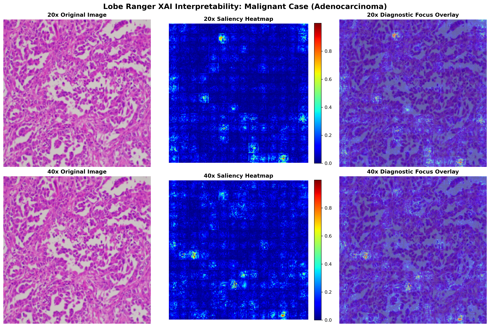
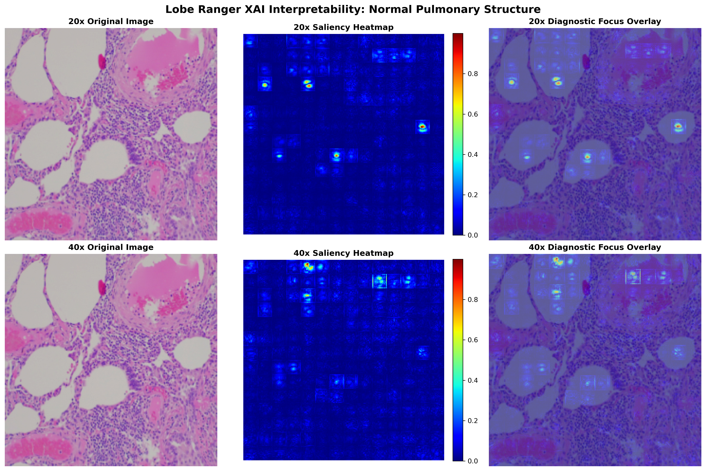

Bidirectional Cross-Scale Attention Fusion
Lobe Ranger (MOPFN) integrates global tissue architecture (20x) and detailed cell cytology (40x) to mimic a pathologist's workflow of zooming in and out under the microscope.
Shared ViT-B Backbone
Leverages a robust Vision Transformer (ViT-B/16) pre-trained backbone, freezing early encoder blocks to preserve high-level representations while reducing training footprints.
Multi-Scale Image Pairing
Patient-wise matches 20x macro-structural and 40x micro-cytological tissue patches, capturing multi-resolution spatial features without heavy downsampling.
Bidirectional Attention
Enables information exchange between scales: the 20x branch queries the 40x branch for fine cytologic details, and the 40x branch queries 20x for wider contextual layout.
Hierarchical Ordinal Heads
Multi-task heads predict binary malignancy, subtype (masked for normal), and ordinal differentiation grade using Consistent Ordinal Regression (CORAL).
Explainable AI (XAI) & Interpretability
Clinical validation is achieved via gradient-weighted input saliency mapping, visualizing exactly where Lobe Ranger focuses to make its malignancy predictions.


Quantitative Evaluation Results
Classification performance evaluated on the isolated patient-wise test split using our custom Stratified Patient Splitter.
| Evaluation Task | Metric Name | Value |
|---|---|---|
| Task A: Malignancy Detection (Normal vs. Tumor) | Accuracy | 95.48% |
| Task A: Malignancy Detection (Normal vs. Tumor) | F1-Score | 97.63% |
| Task A: Malignancy Detection (Normal vs. Tumor) | ROC-AUC | 0.9814 |
| Task B: Carcinoma Subtype (ACA vs. SCC) | Accuracy | 13.79% |
| Task B: Carcinoma Subtype (ACA vs. SCC) | Macro F1-Score | 12.12% |
| Task C: Ordinal Differentiation (Well -> Mod -> Poor) | Accuracy | 98.62% |
| Task C: Ordinal Differentiation (Well -> Mod -> Poor) | Mean Absolute Error (MAE) | 0.021 grades |
*Note: Task B and Task C metrics are masked out during training and evaluation on normal cases, and computed exclusively for malignant pathology samples.